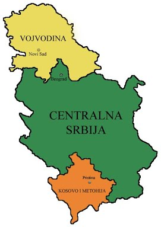
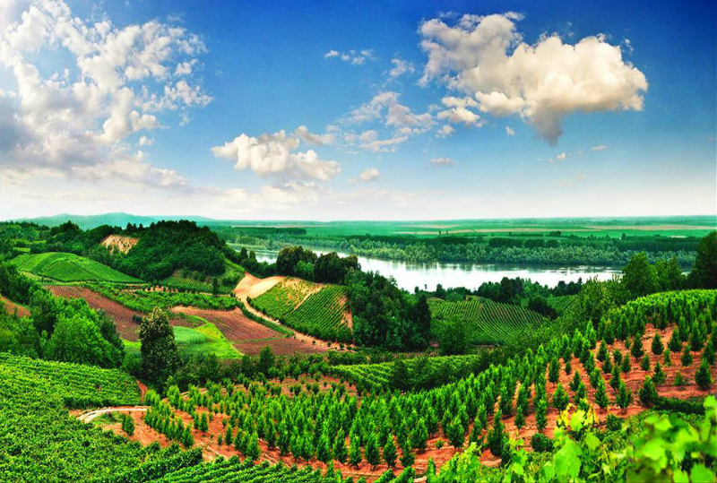
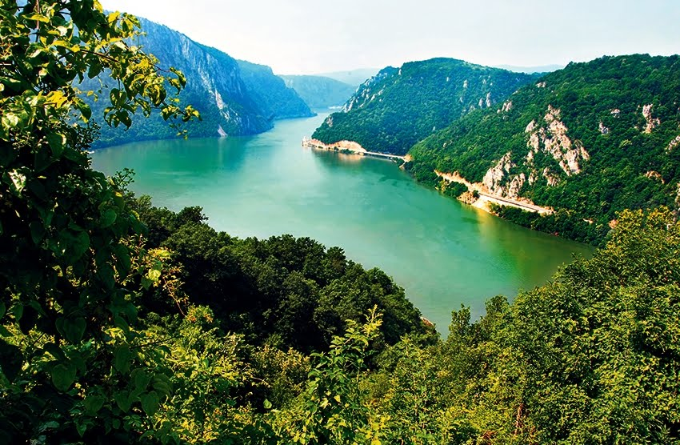

O Srbiji
Srbija je zemlja u jugoistočnoj Evrpoi, tačnije na Bakanskom poluostrvu. Srbija se sastoji iz dve autonomne pokrajine (Vojvodina i Kosovo i Metohija), i centralne Srbije. U Srbiji živi 7.186.862 stanovnika po popisu iz 2011. godine. Srbija se graniči sa 8 država a te države su:Mađarska, Hravtska, BiH, Crna Gora, Albanija, Makedonija, Bugarska i Rumunija. Glavni i najveći grad Srbije je Beograd sa oko 1.6 miliona stanovnika.
Najveći gradovi
Beograd 1.6 miliona stanovnika
Novi Sad 286.128 stanovnika
Niš 185.978 stanovnika
Kragujevac 150.835 stanovnika
i Prišrina 145.149 stanovnika.
Nacionalni parkovi Srbije
Srbija ima pet nacionalnih parkova a to su:Fruška gora
Đerdap
Kopaonik
Tara
Šar planina 